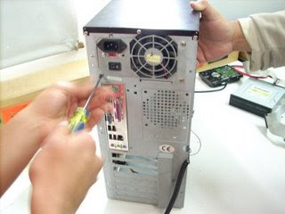
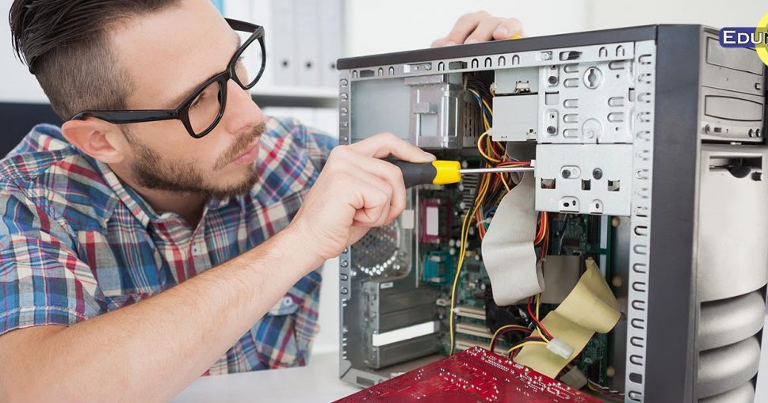

Mantenimiento
Realizar un mantenimiento adecuado de los equipos electrónicos que se usan a diario permite alargar la vida útil de estos dispositivos y disfrutar de un mayor rendimiento durante su uso. Este mantenimiento tiene como objetivo prevenir los posibles fallos o incidencias que puedan presentarse en los móviles, tabletas, ordenadores, portátiles, etcétera, para prolongar de esta manera su buen funcionamiento. >
Se puede realizar desde un punto de vista físico o de hardware con acciones como limpieza del equipo, reemplazo de la batería, revisión de conexiones y cableado… Es recomendable que todas estas acciones de mantenimiento sean llevadas a cabo por un servicio técnico homologado por la marca del dispositivo. Más aún si el equipo se encuentra en periodo de garantía pues, de lo contrario, esta quedaría invalidada.
Por otro lado, también se recomienda realizar un mantenimiento del software con el fin de asegurar que todas las funcionalidades del equipo se encuentran a pleno rendimiento.
Desensamble
El proceso de desensamblaje consiste en ir desconectando cada uno de los componentes de la tarjeta madre ya sea para un mantenimiento preventivo o correctivo. También este proceso es muy habitual cuando vamos hacer limpieza a nuestro equipo, pues al desarmarlo tendremos un amplio espacio para realizar la limpieza.
Materiales:
Destornilladores de pala y torx.
Manilla Antiestática.
Cinta para pegar los tornillos y organizarlos de acuerdo al lugar en el que son utilizados.
Papel y lápiz.
Ensamblaje
Ensamblaje de una computadora es un procedimiento que consiste en colocar correctamente todas las partes de una computadora con la finalidad que todo funcione eficientemente para luego poder instalar el sistema operativo y demás programas de acuerdo a las necesidades del usuario.
Componentes para ensamblar:
Placa base.
Procesador (CPU).
Memoria (RAM).
Almacenamiento (unidades).
Tarjeta de vídeo/tarjeta gráfica/unidad de procesamiento gráfico (GPU).
Carcasa.
Ventiladores de carcasa.
Fuente de alimentación.
Palabras Sabias
 Los sabios emiten ideas nuevas; los necios las expanden. .
Los sabios emiten ideas nuevas; los necios las expanden. .
Heinrich Heine